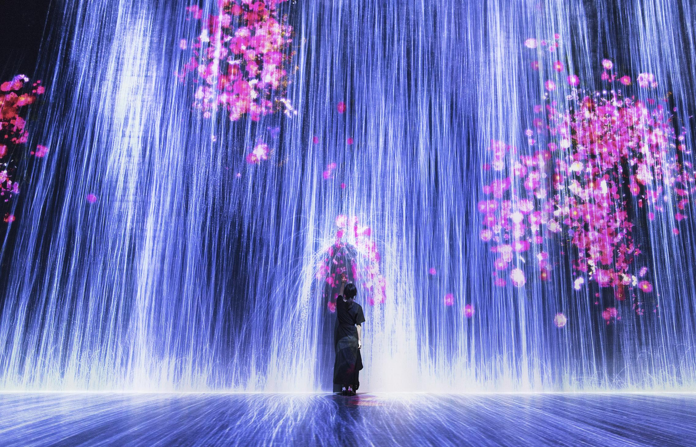
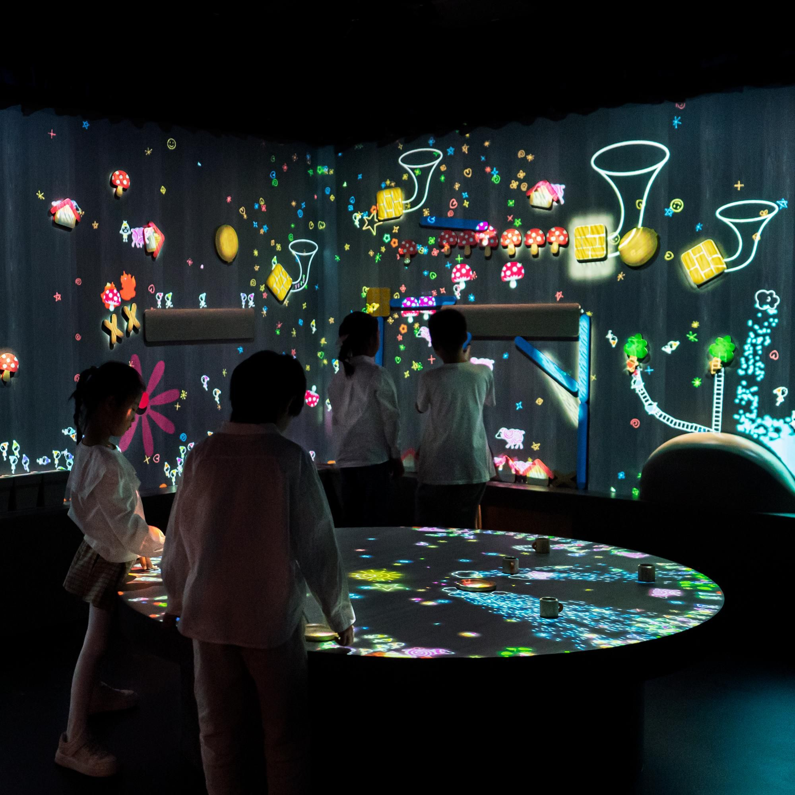
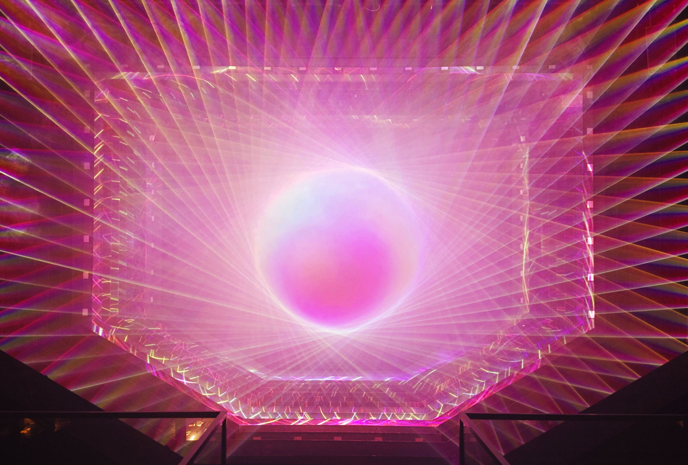
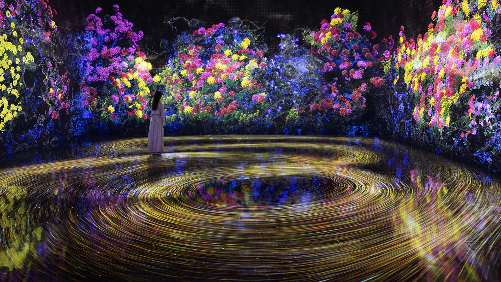
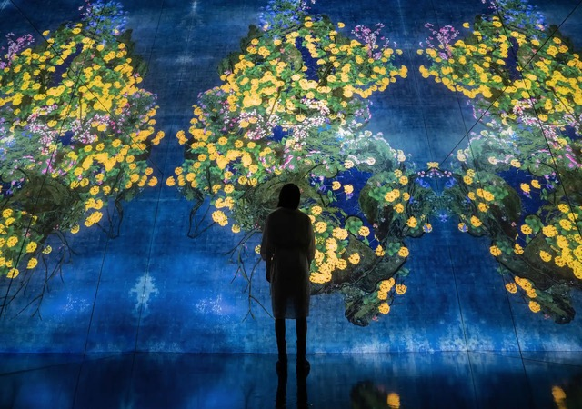

Future World: Where Art Meets Science is a permanent exhibition by teamLab at ArtScience Museum, Singapore, commissioned in 2016. Spanning over 1,500 square metres, it immerses visitors in a continuous, ever-changing environment of digital art in which nature, technology, and human presence interact. Flowers bloom and dissolve across walls and floors; waterways shift with the movement of people; constellations respond to touch. Nothing is static, and no two visits are alike.
teamLab, the Tokyo-based art collective of artists, engineers, mathematicians, and architects, created the exhibition as a space where boundaries between the physical and digital dissolve entirely. The works are not projections onto surfaces but living systems: algorithms that perceive the presence of visitors and continuously reshape the environment around them. The effect is not spectacle but something closer to participation in a world that is genuinely alive to you.
Since opening, Future World has welcomed over 4.5 million visitors, making it one of the most visited exhibitions in South-East Asia. It has introduced generations of young Singaporeans to the idea that art and science are not separate disciplines but different modes of asking the same questions about how we perceive, inhabit, and transform the world.

Honor Harger, ArtScience Museum
teamLab
ArtScience Museum · Marina Bay Sands



